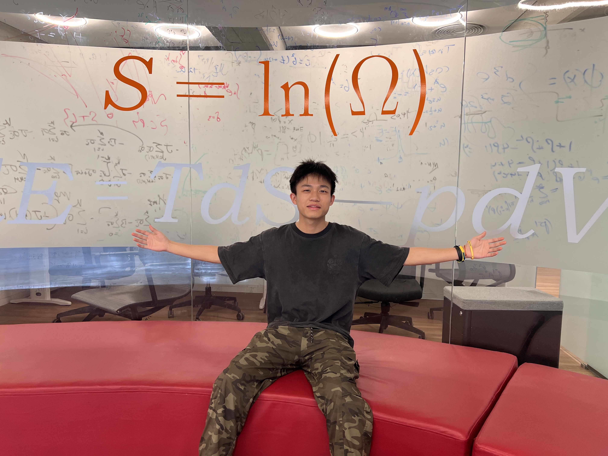

About Me
Hello! I am a PhD student specializing in Gravitational Waves and Pulsar Timing. My research focuses on understanding the universe through the detection and analysis of gravitational wave signals.
I am passionate about exploring the mysteries of the cosmos, from the ripples in spacetime caused by massive cosmic events to the precise timing of pulsars that serve as cosmic clocks.
Research Interests
News
Research
Gravitational Wave Detection
Developing methods for detecting gravitational waves from various astrophysical sources.
Pulsar Timing Arrays
Using pulsars as cosmic clocks to detect low-frequency gravitational waves.
Data Analysis
Statistical methods and machine learning for astronomical data processing.
Publications

Education
PhD in Astrophysics
Your University
2026 - Present
Research focus: Gravitational Waves & Pulsar Timing
Bachelor's Degree
Your Previous University
20XX - 20XX
Major: Physics / Astronomy
Honors & Awards
Gallery
